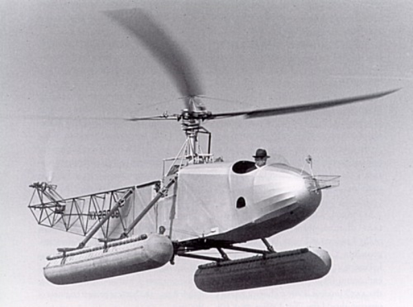

Igor Sikorsky
Aviation pioneer in both helicopters and fixed-wing aircraft.
List of aircraft designed by Sikorsky
- S-1 single-engine pusher biplane, Sikorsky's first fixed wing design, 1910
- S-2 single-engine tractor biplane developed from the S-1, 1910
- S-3 enlarged and improved version of the S-2, 1910
- S-4 one-seat, single-engine biplane concept developed from the S-3, never flown, 1911
- S-9 Krugly three-seat, single-engine monoplane, 1913
- S-16 two-seat, single-engine escort fighter, 1914-1915
- S-38 twin-engined eight-seat flying boat, 1928
- S-42 Clipper – flying boat, 1934
- VS-300 experimental prototype helicopter, 1939
- R-4 world's first production helicopter, 1942
If you have time, you should read more about this incredible human being on his Wikipedia entry.